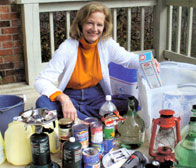
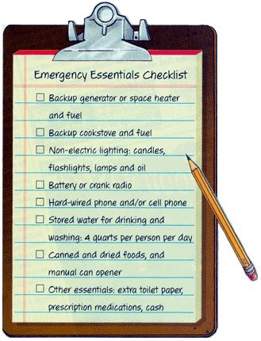
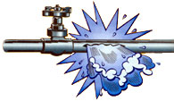

Most of us have experienced short-term power outages and have learned we can get through a day without power. Even most of the 50 million people in the northeast United States and southeast Canada who lost power during last summer's historic grid collapse found their lights back on within a day or so.
But imagine a blackout that lasts several days, a week, two weeks or even a month. Such prolonged power outages are a real possibility after a serious hurricane or winter storm-especially for rural folks who often are last in line to get their power restored. And given the fragility of our overworked utility grid, urban dwellers likely won't be exempt from extended blackouts. After all, it doesn't take much to bring the grid crashing down: In the summer of 1996, a tree fell on a power line in Idaho, setting in motion a blackout that affected 15 Western states. This time of year, an inch of ice may be all it takes to make your home powerless and potentially unsafe, sending your family to an emergency shelter at the high school gym or community center.
I'm still trying to forget nine powerless days my family endured a few years ago: the smell of unflushed toilets, the power plays for batteries between father and daughter, cold cereal with no milk and the gas-station chicken fingers we had for Christmas dinner.
Since then, I've moved. Now I live far out in the country in North Carolina. My neighbors tell me they once went 13 days without power after a winter storm. Knowing it will happen again, and dreading a stint in a shelter, I decided to get ready. Last fall I devoted a week to preparing a simple and inexpensive emergency kit that will help my family ride out 14 days without electricity. This kit gives me peace of mind because now I know the next blackout won't be a nightmare. Life might even be pretty close to normal.
SAVING SAFE WATER
I began my emergency kit with water. In rural areas, blackouts always shut down wells. After my driveway ices over, I'm stranded, and even if I could get to a store, I probably wouldn't find any water-bottled water quickly disappears just before or during emergencies. Those on a municipal water supply also should stock u-just because the faucet flows doesn't mean the water is safe to drink. If backup power fails at water-treatment plants, a boil order will be issued. But if you don't have a reliable, non-electric heating method, you won't want to drink or wash your face with contaminated water. The solution is to store enough water for drinking and for sanitation purposes, too.
The Federal Emergency Management Agency (FEMA) recommends having 2 quarts per person per day for drinking water, and 2 quarts per person per day for washing, flushing toilets (keep reading) and other purposes. And don't forget the water needs of your animals. My 60-pound dog drinks at least half a gallon a day.
Save water for sanitation purposes in plastic jugs that have been cleaned with hot, soapy water. You also can use water from a rain barrel or other high-volume container. Survival Unlimited [(800) 455 2201; www.survivalunlimited.com ] sells a range of water storage containers, which also are available at farm-supply stores.
Drinking water requires more exacting storage. Commercially produced bottled water lasts for a year when stored in a cool, dark place. But you don't have to buy bottled water.
Instead, store your own in thoroughly cleaned 2 liter plastic bottles, which are better than milk jugs because the plastic is thicker and less likely to leak. Glass bottles with screw-on caps are great, too. Make sure bacteria or other microorganisms can't contaminate your stored drinking water; the Centers for Disease Control and Prevention recommends mixing in four drops of unscented chlorine bleach per quart of water just before capping the containers, although some sources disagree with this advice. If you do use bleach, check the label to make sure that the only active ingredient is sodium hypochlorite.
If a disaster catches you by surprise and you don't have stored water, fill up every available container-including your bathtub-right away. If it's too late for that (your water is off or contaminated), a backup plan is to melt ice from your freezer. After that, drain the water from your water heater (but first turn it off at the circuit box).
IF WATER GOES BAD
To eliminate bacteria and other parasites in water of questionable quality, you have three options:
Bring it to a full boil for 1 minute. Filter it (see "Safe Drinking Water," June/July 2003, for your options). Treat it with iodine or chlorine-both are available as tablets, or you can use plain chlorine bleach.
Boiling will kill bacteria and the parasite giardia within a minute. Iodine and chlorine will remove contaminants in 30 minutes. Iodine is the better disinfectant, but some people are allergic to it, and pregnant or nursing women should not drink iodine-treated water. Iodine also leaves a funky taste, which can be neutralized with vitamin C or a flavored drink mix that contains vitamin C, such as Tang. To disinfect with chlorine, mix 16 drops of chlorine bleach per gallon of water and let the treated water sit for 30 minutes.
If you'd rather filter your water, get a pump microfilter such as those used by backpackers. Prices start at about $50; Campmor [(888) 226-7667; www.campmor.com ] has a good selection. Or consider buying or building a passive-solar water distiller (see "Water Wiser Solar Stills," August/September 2002 at http://www.motherearthnews.com ). Distilled water is even cleaner than boiled water.
If your water is really yucky and you can't boil or distill it, filter it through a cloth or coffee filter, treat it with iodine or chlorine, wait 30 minutes and then run it through a microfilter before you drink any.
MISSING BATHROOMS
Next, determine how much water your toilet needs to flush. Turn off the water supply, flush it once to empty the tank and then measure how much water you pour into the tank in order to execute one good flush. Some low-flush toilets need only 1 1/2 gallons, but older models may need 3 gallons. Depending on how many people use the toilet, it may need to be flushed once, twice or three times a day. The best way to force flushes is to pour the amount of water needed into the reservoir tank, hold down the handle and let it rip. The water you use to flush your toilet need not be clean-melted ice or snow makes fine flushing water.
But in some conditions, such as during a flood, your city's sewer system or your household's septic system may not work. To prepare for this situation, store materials to make a "sawdust potty" in your emergency kit as well. All you need is organic material such as sawdust, peat moss or soil, and a 5-gallon bucket with a lid. After you use the potty, just pour a layer of organic material in the bucket and put the lid on. A family of four can expect to fill a 5-gallon bucket in three or four days.
As for bathing water, cleaner always is better, and warm and clean water is best of all. When push comes to shove, most people can bathe pretty well using only 1 gallon of warm water. Place it in a bucket in your tub or shower, soap up with a washcloth, and then rinse. Pure soap (such as Ivory or Dr. Bronner's) requires less rinsing than soaps that contain moisturizers or other chemicals. Also, stash a sealed container of diaper wipes in your emergency kit to limit water needed for washing hands.
EMERGENCY FOOD
Set aside cabinet space or a storage bin to store emergency food reserves. Your stash could include canned soups, meats, nuts, fruits and vegetables; unopened peanut butter and jelly; dried fruits and vegetables; crackers and hard candy. When stored in airtight containers, these foods will keep for a year. Be creative and include items you don't normally eat-the variety will be a welcome treat during the stress of a blackout.
If your backup generator isn't powering the refrigerator, raid it for the food, but don't open the door more than necessary.
If your freezer isn't full, freeze water in plastic 2-liter bottles to help keep food frozen when the power is out. The bottles of ice also will add to your emergency water supply. In warm weather, cover your freezer with thick blankets to insulate it, and call your neighbors for help. If there is a portable generator nearby, ask to borrow it for six hours (the time needed to refreeze partially thawed freezer contents). Your local rescue squad or fire department may rotate a portable generator from house to house, too.
CRUCIAL COMMUNICATIONS
The ability to communicate with family, friends and the outside world is critical during an emergency. If only the electricity is out, hard-wired phones will continue to work, but cell phones will work only if the service provider's towers have backup generators.
When a blackout hits, immediately make necessary phone calls. If someone in your household has chronic, serious medical needs, alert the appropriate local rescue agency. Tell an out-of-town relative you're OK and prepared for the emergency; ask him or her to pass on the news to other loved ones. Then turn off your cell phone to conserve its battery. Use a car charger (if you can safely get to your car) if your battery is low.
Should an emergency happen, your cell phone could be your lifeline. If you have an old cell phone that you no longer use, save it for your emergency kit. By law, every cell phone can call 911 (as long as it can get a signal), even if you do not have current service with a wireless company.
A small battery-operated or crank radio is another must-have in your emergency kit. Weather radios aren't much for entertainment, but they are an excellent source of information. With any type of radio, playing it at low volume is the best way to conserve the battery.
PRESERVING YOUR SANITY
A blackout is one of those times when attitude really is everything. When I asked others about their worst blackout experiences, they all told stories about someone else's whining and complaining. Some folks will freak out pretty fast without everyday amenities and conveniences such as television, music or a computer.
This problem merits advance planning, too. My emergency kit includes a deck of cards, paper and pencils, a jigsaw puzzle and a long audio book that I can listen to on a battery-powered tape player. I'm working on a better battery backup for my laptop, because I truly like my work. My teenager's plan includes drawing, lots of reading and making a scrapbook. I put a harmonica in the box, too. Nobody here knows how to play it, but if a blackout lasts long enough, that will change.
Measured in peace of mind, the little time and money I invested in blackout preparedness was well worth it. My stockpiled supplies provide reassuring security, so now I can look forward to the future-any future-with confidence rather than fear.
Mother Earth News contributing editor Barbara Pleasant lives on a dead-end road in the mountains of western North Carolina.
Frozen Pipe Facts
You may begin a winter blackout with water, but if you don't have backup heat, your pipes might freeze and burst, creating a major repair expense.
To slow pipes from freezing, turn both hot and cold water faucets to a trickle; the continuous water flow will delay freezing. If your pipes do freeze, shut off the main water valve that supplies your house before the pipes thaw. Then check for leaks caused by the ice expanding in the pipes, and repair the leaks before you turn the water pressure back on.
Mother Earth News
|
 Barbara Pleasant |
 |
 |